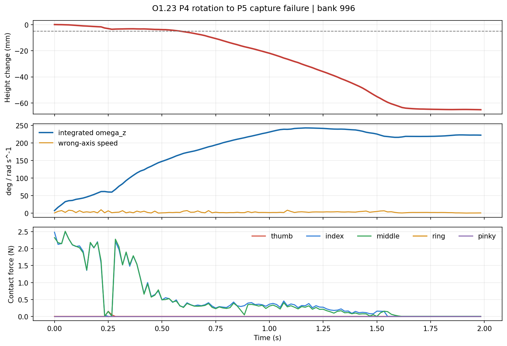

口径：这是逐帧运动学回放，用于看清手指和笔；不是在 MuJoCo 中重新执行 policy，也不能证明两引擎动力学一致。
最大高度下降 65.16 mm，最终累计目标轴转角 222.5°。

source: /home/linkerhand/桌面/deep learning/dex5_penspin/reports/m3_2_30_index_near_surface/o1_privileged_oracle_smoke/O1_23_典型P3到P4失败轨迹/failure_trajectory_states.npz